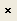
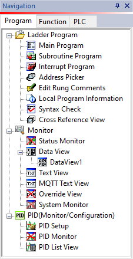
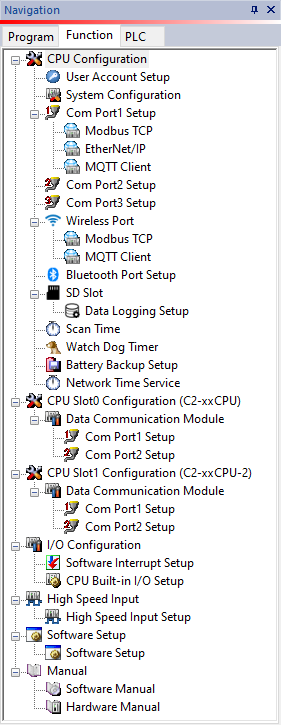
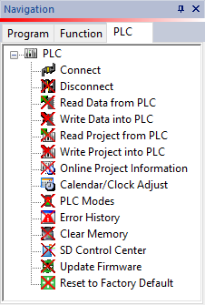

Topic: CL134

| Navigation |
Topic: CL134
|
The Navigation Window provides a handy alternative to the drop-down menus or Toolbar icons. Three Tabs contain icons grouped according to their function. Double-click any icon on the Navigation Window to redirect the software to the desired location.
The Navigation Window can be closed by clicking the

in the upper right corner of the Window, and it can be reopened, or toggled, by clicking View > Window > Navigation.The Program Tab combines key parts of the Program Menu and Monitor Menu.

The Function Tab combines most of the links available from the Setup Menu as well as access to PDF copies of Software Manual (Help File) and CLICK Hardware Manual and CLICK PLUS Hardware Manual.

The PLC Tab presents all of the links of the PLC Menu.
